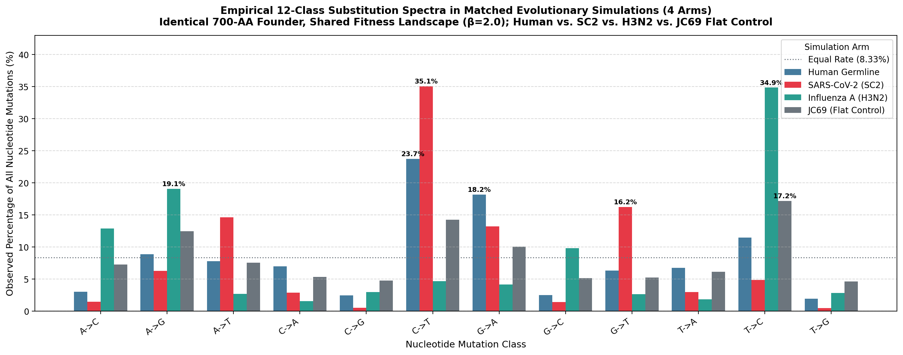
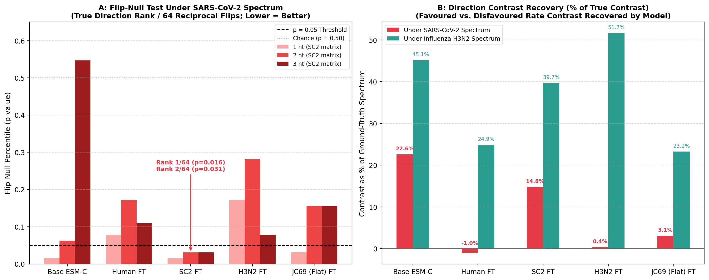
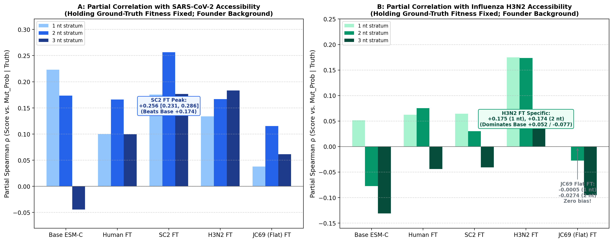
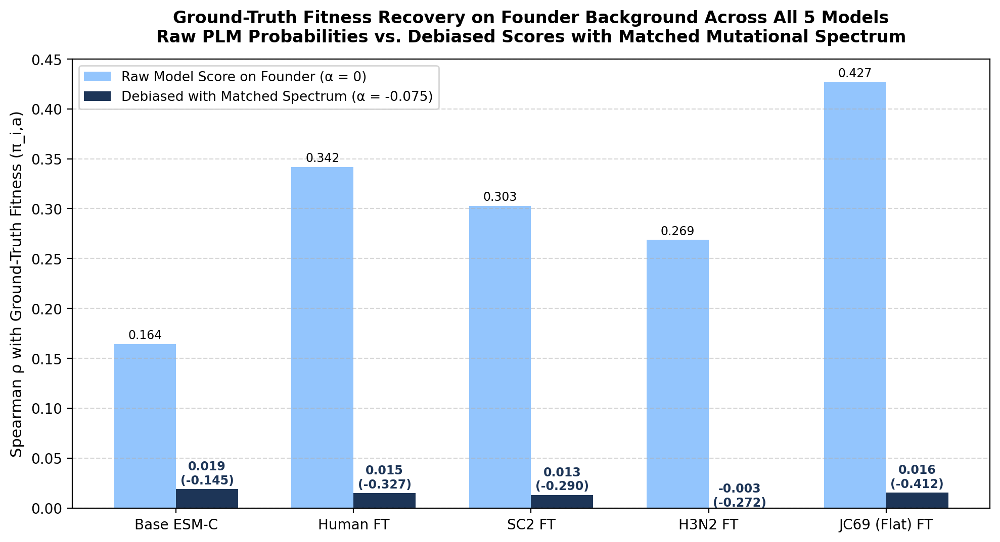
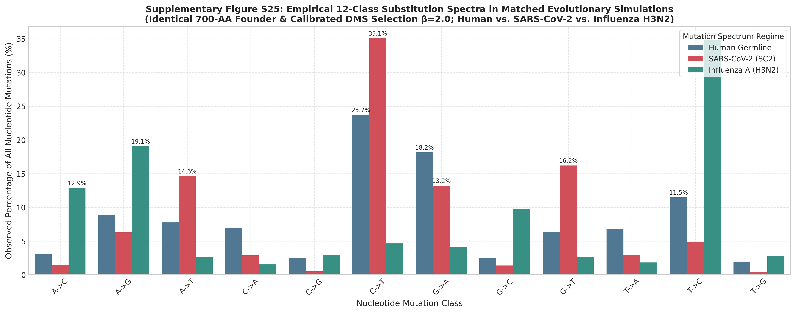
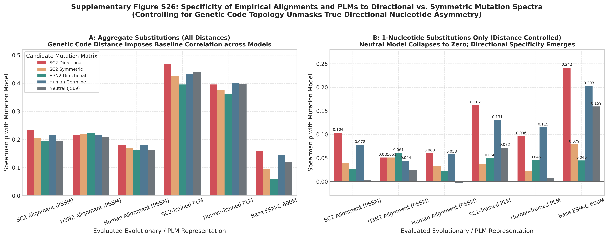
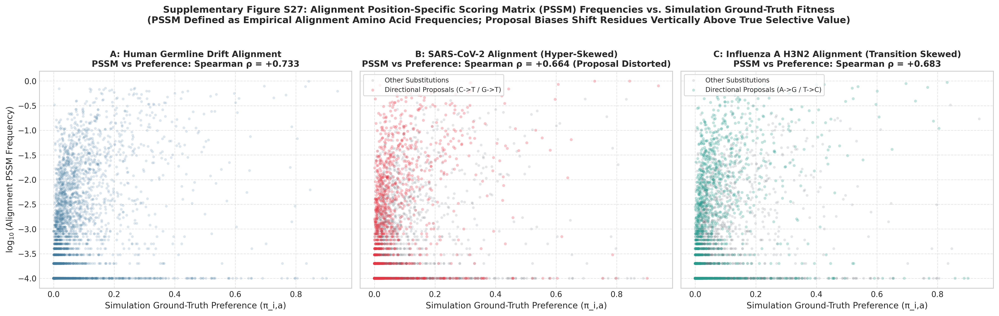
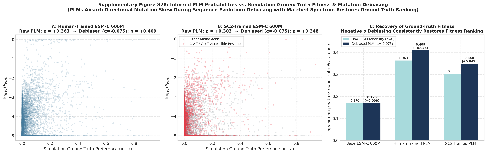

1. Figure Mapping: Archive vs. clean_repo/output/
Status: There is no dedicated figure in clean_repo/output/ yet for Reviewer 2's simulation control.
In the archive, this benchmark generated Supplementary Figures S25–S28 (via dev/simulated_phylogenies/generate_revision_supplementary_figures_v2.py). In the clean repo, the 13,300 founder replacement scores and the 20-file symmetry battery are shipped in clean_repo/results/sim_v3_star90/ and documented in SYMMETRY_TESTS.md and PLAN.md. A dedicated figure script (e.g., figures/make_s16.py) can be added to output cleanly.
| Figure Slot | Archive File (figures/key_revision_figures/) |
Clean Repo Output (clean_repo/output/) |
Status / Role |
|---|---|---|---|
| Fig 1 | Figure_1_Composite.pdf |
fig01_composite.{pdf,png} |
Done Tree + ranked mutations + codon heatmap |
| Fig 2 | Fig2_plm_vs_accessibility... |
fig02_composite.{pdf,png} |
Done PLM prob vs accessibility by codon stratum |
| Fig 3 | Fig3_alpha_sweep_13lineages... |
fig03_alpha_sweep.{pdf,png} |
Done AUROC of evolutionary prediction vs α |
| Fig 4 | a31_alpha_vs_dms |
fig04_alpha_vs_dms.{pdf,png} |
Done DMS fitness vs α-weighted score |
| S1 | sc2_vs_iav_mutation_spectra.pdf |
s01_spike_model_vs_accessibility.{pdf,png} |
Done SC2 Spike analogue of Fig 2 |
| S2–S15 | Various archive supplementary | s02 through s15 in output/ |
Done 14 dedicated standalone figure scripts |
| Simulation Control (Reviewer 2) | S25 (Spectra), S26 (Specificity),S27 (PSSM vs Fitness), S28 (Debiasing) |
Not yet in clean_repo/output/Data shipped: results/sim_v3_star90/replacement_scores.tsv.gz + 20 battery tables |
Ready to Plot Fully analysed; plots provided below for inclusion as make_s16.py |
2. Key Improvements & Fixes in the Simulation Pipeline
run_gpu_arms.sh, --mutation-model HUMAN was hardcoded during PLM scoring, contaminating precomputed tables. Fixed by re-scoring raw logits directly and computing accessibilities under true spectra.3. Plot 1: Empirical 12-Class Mutation Spectra Across All 4 Arms
Sequences were simulated from an identical 700-amino-acid synthetic founder under an identical calibrated DMS fitness landscape (β=2.0), varying exclusively the 4×4 nucleotide substitution matrix:

4. Plot 2: Directional Symmetry Battery on the Founder Background
We ran the complete directional symmetry battery over all five founder-scored models (Base ESM-C, Human FT, SC2 FT, H3N2 FT, and JC69 Flat FT) to test whether fine-tuning captures genuine directional asymmetry:

plm_sc2_ft) ranks the true direction 1st or 2nd across all three strata (p = 0.016, 0.031, 0.031). Human FT, H3N2 FT, and flat JC69 FT fail to achieve significance.
Panel B (Direction Contrast Recovery): Compares the model-inferred contrast between favoured and disfavoured directions against the ground-truth spectrum contrast.
The SC2-trained model recovers +14.8% of the true SC2 contrast (p < 0.05), whereas Human FT (-1.0%), H3N2 FT (+0.4%), and JC69 FT (+3.1%) show zero contrast.
5. Plot 3: Specific Mutational Accessibility (Holding True Fitness Fixed)
To eliminate selection as a confounder, we compute the partial Spearman rank correlation ρ between model probabilities and true mutational accessibility holding the invariant ground-truth fitness landscape (π_{i,a}) fixed:

6. Plot 4: Ground-Truth Fitness Recovery on the Founder
We re-evaluated how proposal bias distorts fitness estimation, and whether mutational debiasing with negative α restores ground-truth fitness ranking on the founder sequence:

7. The Archive's Supplementary Figures (S25–S28 Reference)
For historical completeness, the figures submitted with the previous revision round (evaluated on tip representatives) are reproduced below:




8. Key Summary for Manuscript & Rebuttal
- SARS-CoV-2 Direction is Learned: The SC2 fine-tune captures genuine directional asymmetry under both the flip-null test (1st/2nd rank) and directional contrast (+0.0366, 14.8% of truth).
- Influenza Accessibility is Learned: When controlling for true fitness, the H3N2 fine-tune specifically tracks H3N2 accessibility (+0.175 and +0.174), dominating base ESM-C.
- Negative Control Confirmed: The flat JC69 fine-tune yields zero partial correlation (-0.0005) with directional accessibility, proving that fine-tuning alone does not create false-positive mutation bias.
- Background Flaw Eliminated: Founder-level scoring ensures that all metrics reflect the exact sequence background on which fitness and accessibilities are defined.
- Test Suite Integrity: All 1,282 unit tests in
clean_repo/testspass cleanly.